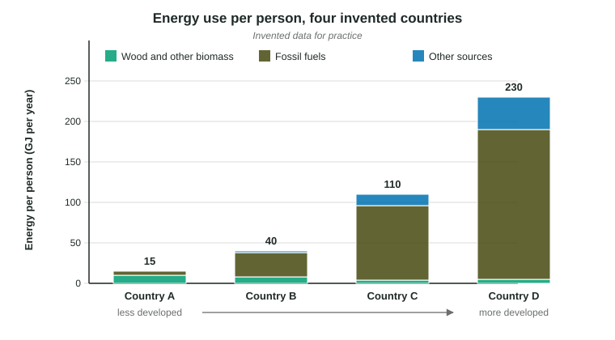

Global Energy Consumption
The world runs mostly on fossil fuels, about 80 percent of its energy.
Part 1 · Hook
Why this matters
Part 2 · Before you start
What this builds on
Part 3 · Prerequisite check
Quick check before you start
1. Which describes a developed country compared with a developing country?
- Higher income per person and more industry
- A faster-growing population
- More people working on farms
- A higher birth rate
Show the answer
Developed countries are richer per person and more industrialized; developing countries usually grow faster.
- Correct: Higher income per person and more industry:
- A faster-growing population:
- More people working on farms:
- A higher birth rate:
2. Which fuels are nonrenewable?
- Coal, oil and natural gas
- Sunlight and wind
- Firewood regrown each decade
- Moving river water
Show the answer
Fossil fuels exist in fixed amounts and form over millions of years.
- Correct: Coal, oil and natural gas:
- Sunlight and wind:
- Firewood regrown each decade:
- Moving river water:
3. A value rises from 40 to 50. What is the percent change?
- 25%
- 20%
- 10%
- 125%
Show the answer
.
- Correct: 25%:
- 20%:
- 10%:
- 125%:
Part 4 · See it
See it first

Part 5 · Step by step
How it works, step by step
- A country industrializes and incomes risefactories, vehicles, appliances and heating or cooling spread
- Each of these runs on fuel or electricityenergy use per person rises, often more than tenfold
- Most new supply still comes from cheap, available fossil fuelsworld use of coal, oil and natural gas keeps growing
- Total use is population times use per personworld energy use rises as developing countries grow in both
Part 6 · Key ideas
Key ideas
- Fossil fuels supply about 80 percent of the world's energy. Oil is the largest single source, used mostly for transportation; coal is the largest single source of electricity worldwide.
- Energy consumption per person is highest in developed countries. The United States has about 4 percent of the world's people and uses roughly one sixth of its energy.
- Use is rising fastest in developing countries as they industrialize. About 2.1 billion people lack clean cooking fuels and burn mostly wood, charcoal, crop waste or dung.
- Total use = population × use per person. Read graphs for both the total and the per-person value, and compare with numbers.
Part 7 · Misconception
A common mistake
The wrong idea: The country with the most people uses the most energy per person.
What actually happens: Population raises a country's total energy use, but use per person depends on wealth, industry and climate. A small rich country can use many times more per person than a large poor one.
Part 8 · Check yourself
Check yourself
Exam-style questions. Anything you miss goes into your review queue.
1. Which group of sources supplies most of the world's energy today?
- Wind and sunlight together with moving water
- Nuclear power and Earth's internal heat combined
- Wood, charcoal, crop waste and other biomass
- Fossil fuels: oil, coal and natural gas
Show the answer
Oil, coal and natural gas together supply about four fifths of the world's energy (80 to 86 percent, depending on the source).
- Wind and sunlight together with moving water: Wind, sunlight and moving water are growing fast but supply far less than fossil fuels.
- Nuclear power and Earth's internal heat combined: Nuclear power supplies only a few percent of the world's energy, and Earth's internal heat less.
- Wood, charcoal, crop waste and other biomass: Biomass is the main fuel for many poorer households, but a small share worldwide.
- Correct: Fossil fuels: oil, coal and natural gas: Right: fossil fuels supply about 80 percent.
2. The United States has about 4 percent of the world's people and uses roughly one sixth of the world's energy. What does this show?
- The United States uses about 4 percent of the world's energy
- Energy use per person in the United States is far above the world average
- The United States uses less energy per person than most countries
- Most of the world's energy is used by the United States
Show the answer
A share of energy (about 16 percent) roughly four times its share of people (about 4 percent) means use per person about four times the world average.
- The United States uses about 4 percent of the world's energy: Four percent is the share of people, not the share of energy.
- Correct: Energy use per person in the United States is far above the world average: Right: about 16 percent of the energy for about 4 percent of the people.
- The United States uses less energy per person than most countries: A larger share of energy than of people means more per person, not less.
- Most of the world's energy is used by the United States: One sixth is a large share, but it is not most of the world's energy.
3. A country's energy use rose from 1,200 petajoules in 2000 to 1,500 petajoules in 2020. Write the setup for the percent change, then give the answer.
Type the setup as on the exam, with brackets and units, then the answer.
Show the answer
Percent change is (new minus old) divided by old, times 100:
- Setup: ; answer 25 %
Data
World energy use by source, 1980 to 2020
4. Which fuel supplied the most energy in every year shown?
- Oil
- Coal
- Natural gas
- Renewables
Show the answer
The oil line sits above the others at every point, from 130 to 180 exajoules.
- Correct: Oil: Right: oil is highest in each year.
- Coal: Coal is second for most of the period.
- Natural gas: Natural gas grows steadily but stays below oil.
- Renewables: Renewables are the smallest in each year shown.
5. Write the setup for the percent change in natural gas use from 1980 to 2020, then give the answer.
Type the setup as on the exam, with brackets and units, then the answer.
Show the answer
- Setup: ; answer 180 %
6. Between 2000 and 2020, which source grew the most in percent terms?
- Coal
- Natural gas
- Renewables
- Oil
Show the answer
Renewables went from 30 to 70 exajoules: . Coal grew , gas , oil
- Coal: Coal grew about 58 percent: a large amount, but a smaller percent than renewables.
- Natural gas: Natural gas grew about 56 percent.
- Correct: Renewables: Right: about 133 percent, far more than any fossil fuel.
- Oil: Oil grew about 16 percent.
Part 9 · Summary
Summary
Part 10 · Up next
What comes next
Part 11 · Connections